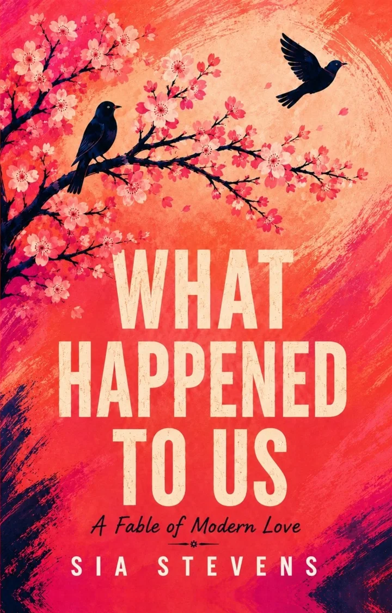

Questions for book clubs
What Happened to Us
A Fable of Modern Love · Sia Stevens
- Victor ends things with “Nothing happened. I just don’t feel it anymore, and I don’t know why.” Is he a coward, a villain, or the most honest character in the book? Did the auditorium change your answer?
- The birds reframe every relationship’s question from Do you love me? to Do you see me? What’s the difference in practice, and which one have you actually been asking?
- In “Value,” Sia reprices her most treasured memory: Richie adored her, she decides, partly because his options were scarce. Did that scene read as liberating clarity or as cynicism? Would you want your own memories audited that way?
- Where have you encountered frosting—charm engineered for the first bite? Have you ever been the frosting?
- Rob teaches that love is a drug and tolerance is built into the design. Does “consumption versus creation” change how you hear the phrase the spark is gone?
- Noah tells Sia she hasn’t escaped dependence—she’s transferred it to a paycheck that “doesn’t need you at all.” Fair? Is modern independence freedom, or a different contract?
- At the frozen waterfall, Adam calls it casual—“such a small word for what it broke.” Did Adam owe her more than honesty? Was his creed of selfless love generosity, or a way of making sure nothing could ever be owed?
- The monastery teaches forgiveness; the Greek kitchen teaches accountability. Forgiveness belongs to the self, but justice belongs to the group. Can one person hold both? Which do you default to, and which does your friend group enforce?
- Rhea says of her Chill Girl years, “I wasn’t forgiving them. I was funding them.” What was she funding, and with what currency? What would collective standards look like among your own friends?
- The old woman argues men are changed by harness—named labors, witnesses, consequences—and Rhea answers, “Sometimes they just sort them.” Which of them is right? Is the book’s answer to “can men change?” hopeful, hard-nosed, or unfair—and to whom?
- Tuesday and Saturday: Sia hands each man a labor instead of an answer. Would you have chosen Victor, Adam, or neither? Is refusing to choose strength, strategy, or hedging?
- When did you realize the us of the title was never just two people? Does the book’s generational diagnosis—love failing quietly, everywhere, the same way—match what you’ve seen?
Bonus, for the braveSia’s email took a year to send. You never have to send yours—but if you wrote it, to whoever your Victor was, what would the first line say?